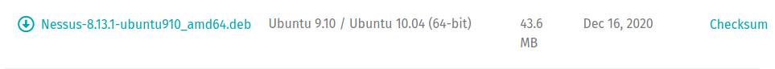

Nessus -- Automated Vulnerability Scan
/bin/systemctl start nessusd.service ---> to start
connect to --> https://kali:8834/
 code: 3RG3-U5YK-VMHL-EB9B-VD8Z
code: 3RG3-U5YK-VMHL-EB9B-VD8Z
--------------------------------------------------------------------------------------------------------------------------------------------------------------------------------------------------------------------------------
ACCOUNT LOGIN:

--------------------------------------------------------------------------------------------------------------------------------------------------------------------------------------------------------------------------------
INSTALL
https://www.tenable.com/downloads/nessus?loginAttempted=true
